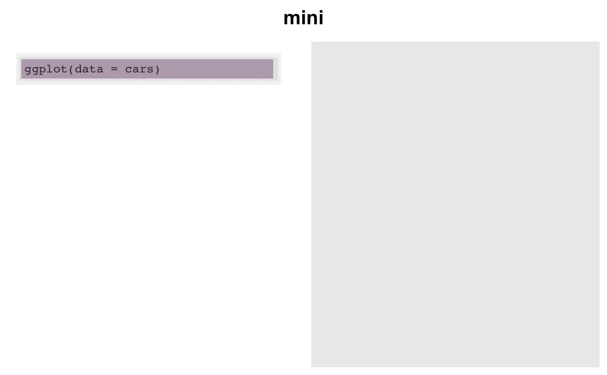

Xaringan is a fantastic rmarkdown presentation tool from Yihui Xie which uses remark.js as its platform. (Yihui Xie has a lot to say about the greatness of remark.js itself in a blogpost — worth a read)
One shortcoming of the format might be that the slide shows are not self-contained. So a presentation is usually a whole collection of files. This is obviously true for the flipbooks created with the {xaringan} platform.
Having so many files can feel overwhelming – especially when it comes time to share your work. So some time ago, I had the idea of working on something self-contained: a flipbook mini (yup, like “ipod mini”).
The same parsing code is used as for the Xaringan presentation platform. But then instead of printing the code in xaringan, the code is plotted as text in a ggplot object. This code is also evaluated to producing a plot. Then I used the {cowplot} package to pasted these two images side-by-side; the composite is saved as a .png which is a single “frame” of the flipbook. Those steps are performed for each partial build of the code. The resultant side-by-side figures (.png frames) are then combined into a gif for the movie effect.
Currently, I’m calling the function that does this flipbookr::chunk_create_gif_flipbook(). It looks at code in a code chunk, creates frames of a flipbook, and combines them into a gif.
Then, At the RStudio conference someone asked if flipbooks can be directly embedded in blog posts or other html documents in a single call. I fact, I didn’t even present the “mini” at the conference — a lot of work needed to be done on fundamental {flipbookr} internal functions. And it hadn’t even occured to me to try to arrange this embedding function. But this was a great (perhaps obvious?) idea! I’ve been working on the implementation
After the gif is saved out with flipbookr::chunk_create_gif_flipbook(), I pull it back in to embed it with knitr::include_graphics(). The {flipookr} function that wraps all of this up is chunk_gif_flipbook_embed().
I still have questions about the internals of this function. Should I be using {gifski}, {majick}? Is there a way for the files to just embed like gganimate files seem to be able to? i.e. not saving out the gif and then pulling back in? With gganimate feels like a “true embed” — I don’t really have the terminology to talk about this… This seems relevant: https://yihui.org/en/2018/08/gifski-knitr/
The details of the implementation in the development package here.
Trouble upon rollout…
Then I tried to embed in blogdown, but when I served the site, the paths to the gifs were broken. So I instead made a pseudo-blogpost (just pushing an html to github pages), whined and asked for help, and called it a day.
Expert help
I failed to ‘mention’ @apreshill in my initial plea. But she is so knowledge about all thinks {rmarkdown}. When I got around to asking her, she was kind enough to do lots of trouble shooting, to get to solutions.
Basically, “bundling” my blogpost was going to be the solution to make sure the file path to the .gif would be maintained.
I did this manually.
- I created a folder in my content/post folder, giving it the name that the blog post file had (no .Rmd extension obviously)
- I put the .Rmd, .html and associated files in the that folder
- I changed the name of the .Rmd and .html to “index”.
You can check the organization here.
For more on bundling in blogdown (you can set the posts to automatically bundle) check out Alison Hill’s A Spoonful of Hugo: Page Bundles.
Back in business with blogdown: Let’s embed a flipbook mini
So with the having addressed bundling, we can now talk about embedding the gif.
First you’ll have an input code chunk that you’ll refer to by name (I’m calling it cars_plot, and I have echo set to true, but you can do echo = F):
ggplot(data = cars) +
aes(x = speed) +
aes(y = dist) +
geom_point(shape = 21,
alpha = .75,
color = "white") +
aes(fill = dist) +
aes(size = speed) +
scale_fill_viridis_c(end = .9,
option = "magma") +
theme_minimal() +
theme(plot.background =
element_rect(fill = "grey90"))

Then you can embed the flipbook mini as follows (again you might want to set echo to false in the code chunk options):
library(flipbookr)
chunk_gif_flipbook_embed(chunk_name = "cars_plot",
display_type = "output")

You might of course want to show the code and the output side-by-side – the classic flipbook.
chunk_gif_flipbook_embed(chunk_name = "cars_plot",
display_type = "both")

Limitations!
The flipbook mini function works with plot outputs only for the time being.
You cannot copy and paste code from a flipbook mini.
The embedded gif moves at a constant rate forward, you can’t toggle between states as you might do with the traditional flipbook.
Also, Claus Wilke has noted that the flipbooks aspect ratio control needs some work – which is really apparent in the flipbook mini and is also an issue on the {xaringan} platform. This has been duely noted and is logged as an issue in the development package — ideas welcome!
One must bundle in blogdown (see above).
More ways of embedding…
Another way you can share flipbooks is using the knitr function include_url() within a code chunk. I think I learned this from Emi Tanaka initially!
knitr::include_url("https://evamaerey.github.io/tidytuesday_walk_through/tidytuesday_highlights.html")